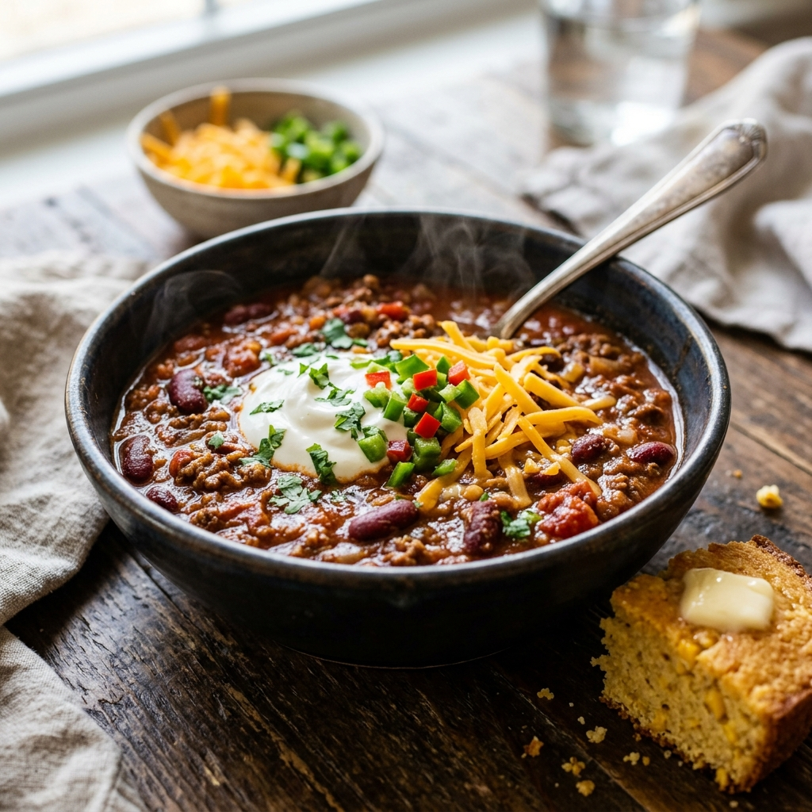

Description
Bold, smoky, and deeply satisfying. A classic Tex-Mex chili with ground beef, kidney beans, and three kinds of pepper. Better the next day, and the day after that — this makes excellent leftovers.
Ingredients
- 700g ground beef
- 2 tbsp vegetable oil
- 1 large onion, diced
- 1 red bell pepper, diced
- 4 cloves garlic, minced
- 2 tbsp chili powder
- 1 tbsp cumin
- 1 tsp smoked paprika
- 1/2 tsp oregano
- 1 can (400g) kidney beans, drained
- 1 can (400g) crushed tomatoes
- 1 cup beef broth
- 1 tbsp tomato paste
- 1 square dark chocolate (optional, but recommended)
- Salt and pepper to taste
- Sour cream, cheddar, scallions, and tortilla chips to serve
Instructions
- Heat oil in a large heavy pot over medium-high. Brown the ground beef in batches, breaking it up. Remove and set aside.
- In the same pot, cook onion and bell pepper for 5 minutes. Add garlic, chili powder, cumin, paprika, and oregano. Cook for 1 minute.
- Return the beef to the pot. Stir in crushed tomatoes, beef broth, and tomato paste.
- Bring to a boil, then reduce heat and simmer for 30 minutes.
- Add kidney beans and the chocolate square. Simmer for another 15–20 minutes until thick and rich.
- Season with salt and pepper. Serve topped with sour cream, shredded cheddar, scallions, and tortilla chips.